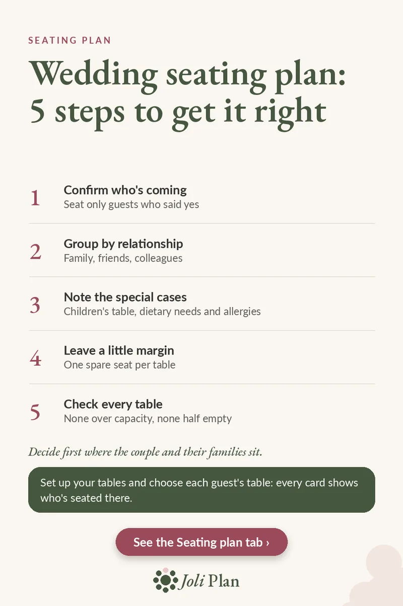

Guests
Wedding seating plan: 5 steps to get it right
Updated on 25/10/2026
A seating plan feels like a puzzle, but a clear order solves it. Here are the five steps, one after the other.
See the wedding planner on Etsy ›

The 5 steps
- Confirm who's coming. Seat only guests who said yes.
- Group by relationship. Family, friends, colleagues.
- Note the special cases. Children's table, dietary needs and allergies.
- Leave a little margin. One spare seat per table.
- Check every table. None over capacity, none half empty.
Before you start
Decide first where the couple and their families sit. Everything else is arranged around those tables.
Always work from your list of confirmed guests, not your invitation list. That way you won't seat someone who ends up not coming.
Why leave a spare seat
One spare seat per table gives you room for a last-minute change: an extra guest or a table that needs rebalancing. Without that margin, a single change can force you to move many people.